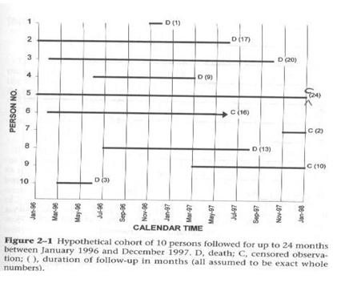
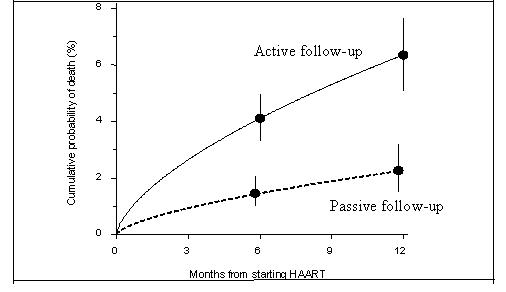

Censoring
Lead Author(s): Jeff Martin, MD
Three Ways Censoring Occurs
1) Death (if death is not the study outcome)
2) Loss to follow-up (refuse, move, or cannot be found)
3) End of study observation (if still alive and have not experienced outcome)
Each subject either experiences the outcome or is censored.
NOTE: To censoring caused by death we could also add diagnosis of another disease that makes the subject ineligible for further follow-up for the main disease under study. Such diagnoses would be specified in advance as censoring event.
Concept of Censoring Observations
Individuals in a study usually start at different times but may drop out before the end of the study, or may experience the outcome (e.g. death) before the end of the study.
It illustrates:
- How the individuals in the study started at different times,
- Dropped out before the end of the study, or
- Experienced the outcome (death in this example) before the end of the study
Diagram of a Hypothetical Cohort

NOTE:
- The times persons enter and leave the cohort are being shown on a calendar time scale.
- The solid black bars represent the length of time each person was followed in the study.
- D = death
- C = censored observation, which means
- The subject either was lost to follow-up,
- Refused to participate further in the study, or
- Continued until the study was ended.
Person number 5 was enrolled at the very beginning and was still in the study at the end. Because this person was the only one with the full 24 months of study follow-up the text does not show this person as censored. I have added a "C" to the figure because when these data are coded for analysis, each person must be coded as either dead or censored. There is no other possibility. For the analysis there is a single variable that indicates whether each person died or didn't die. In terms of the analysis it doesn't matter why a person is censored.
The C for persons still in the study at 24 months, the end of the study in calendar time, is often called administrative censoring. In terms of the analysis it doesn't matter why a person is censored.
In this example, death is the outcome, but in studies with a disease diagnosis outcome death becomes a censoring event since it removes that individual for further follow-up.
Censoring is unrelated to the probability of experiencing the outcome (unrelated to survival).
This concept is related to the threats to validity in a cohort study that come from losses to follow-up. Those persons lost to follow-up are the persons who are censored in the data analysis, so if the goal is to get an unbiased measure of incidence, those losses to follow-up cannot be related to the probability of the outcome. If members of the cohort who are leaving are either more or less likely to experience the outcome than those remaining, the incidence estimate will be either too high or too low.
This figure from Braitstein 2006 presents the cumulative probability of death for HIV patients in highly active anti-retroviral therapy (HAART) programs in low-income countries based on active or passive follow-up. Active follow-up consisted of telephone calls, mailings, or both.

As one can see there is a large difference in the cumulative probability for those on active versus passive follow-up. The authors then remove (informative censoring) those on passive follow-up from further study.
References
Braitstein, P., Brinkhof, M. W., Dabis, F., Schechter, M., Boulle, A., Miotti, P., et al. (2006). Mortality of HIV-1-infected patients in the first year of antiretroviral therapy: comparison between low-income and high-income countries. Lancet, 367 (9513), 817-824.
Szklo, M., & Nieto, F. (2007). Epidemiology: Beyond the Basics (2nd Edition ed.). Boston: Jones and Bartlett Publishers.